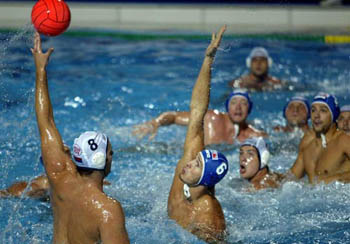

Priča o Olimpu

Glavne ličnosti
Visoko na Olimpu vlada Zevs okružen skupom bogova. Tu je i njegova žena Hera, i zlatokosi Apolon sa svojom sestrom Artemidom, i zlatna Afrodita, i moćna Zevsova kći Atena Palada i mnogi drugi bogovi. (...) U Zevsovom carstvu nema ni kiše ni tuče; tamo je večno svetlo, radosno leto, a dole se kovitlaju oblaci, prekrivajući s vremena na vreme daleku Zemlju. Tamo, na Zemlji proleće i leto smenjuju jesen i zima, radost i veselje smenjuju nesreća i nevolja. Istina, i bogovi znaju za tugu, ali na olimpu ona brzo prolazi i ponovo nastaju radost i veselje.
On i ona
Bogovi piruju u svojim zlatnim odajama, koje je napravio Zevsov sin Hefest. Gospodar Zevs sedi na visokom zlatnom prestolu, a njegovo odvažno, prelepo božansko lice izražava dostojanstvo i uzvišeno smireno osećanje vlasti i moći (...). Tu je i prelepa, veličanstvena boginja Hera, Zevsova žena. Zevs poštuje svoju ženu Heru. pokroviteljicu braka poštuju svi bogovi na Olimpu. Kad velika boginja Hera ulazi u svečanu dvoranu, blistajući svojom lepotom i raskošnim haljinama, svi bogovi ustaju i odaju poštovanje ženi gromovnika Zevsa, a ona, ponosna na svoju moć, ide polako prema zlatnom prestolu i seda pored gospodara bogova i ljudi, velikog Zevsa...
Party
Bogovi piruju. zevsova kći mlada Heba, i sin trojanskog kralja Ganimed, Zevsov ljubimac, koji je od njega dobio besmrtnost, prinose im ambroziju i nektar, hranu i napitak bogova. Prelepe harite i muze uveseljavaju ih pevanjem i igrama. Držeći se za ruke, one vode kolo, a bogovi se dive njihovim lakim pokretima i večno mladoj lepoti. Pirovi bogova Olimpljana od toga su još veseliji. na njima bogovi donose odluke o svemu i određuju sudbinu bogova i ljudi.
One
Zevs čuva poredak i istinu u svetu, i šalje ljudima sreću i nesreću. Ali, madaon šalje sreću i nesreću - sudbinu ljudi ipak određuju mojre, neumoljive boginje sudbine, koje takođe žive na svetlom Olimpu. Čak je i Zevsova sudbina u njihovim rukama. Sudbina vlada smrtnima i bogovima, niko je ne može izbeći. Nema takve sile koja bi mogla makar nešto da izmeni od onoga što je predodređeno bogovima i smrtnima. Jedino mojre znaju naredbe sudbine. Mojra Kloto prede čovekovu životnu nit, koja odrešuje njegov životni vek. Mojra Lahesis, ne gledajući, vadi kocku koja čoveku u životu pada u deo. (...)
Na Olimpu postoji još jedna boginja sudbine - to je Tjuhe, boginja sreće i blagostanja. Iz roga izobilja, roga božanske koze Amalteje čijim je mlekom bio othranjen Zevs, ona prosipa darove ljudima, i srećan je onaj ko na svom životnom putu sretne Tjuhe, boginju sreće; to se vrlo retko dešava. Vrlo je nesrećan čovek od koga se okrene boginja Tjuhe, koja tek što mu je podarila svoje darove.
I?
Tako na Olimpu, okružen svim bogovima, vlada veliki gospodar bogova i ljudi, gromovnik Zevs, čuvajući poredak i istinu u čitavom svetu.
* * *
Nekim pričama i slikama baš ne treba ništa ni dodavati ni oduzimati.
Priča je iz knjige "Legende i mitovi stare Grčke", N. A. Kun. Slika je sa B92 net.
Inače, kad smo bili deca, vodili su nas na Olimp. Rekli su nam da je to planina na kojoj žive bogovi. Mi smo gledali i gledali, ali bogova nigde. Nego baš deluje. planina k'o planina. Ima i jedna slika na visokoj steni tom prilikom, ja i dalje gledam u nebo.
* * *
Update sa Belgrade Bloga, video sa proslave.
 RSS feed
RSS feed
 sadržaji se objavljuju pod
sadržaji se objavljuju pod
Komentari
fascinanatno,jedna od najljepsih grana historije
evelin | 13.02.08 16:36